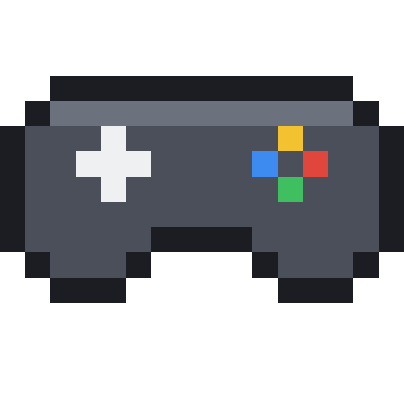
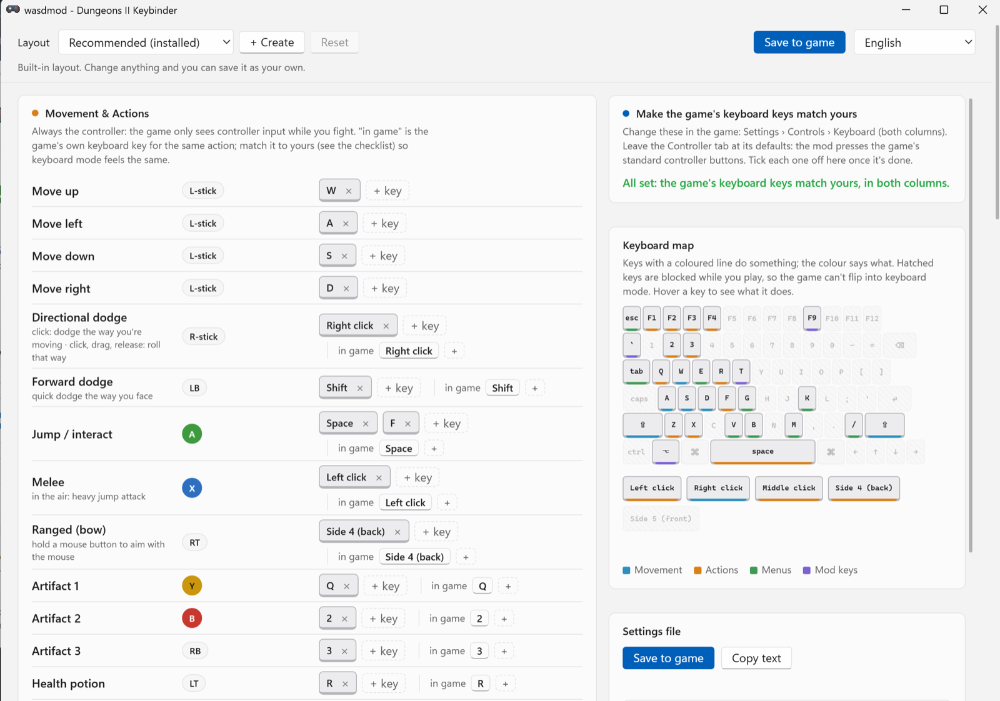
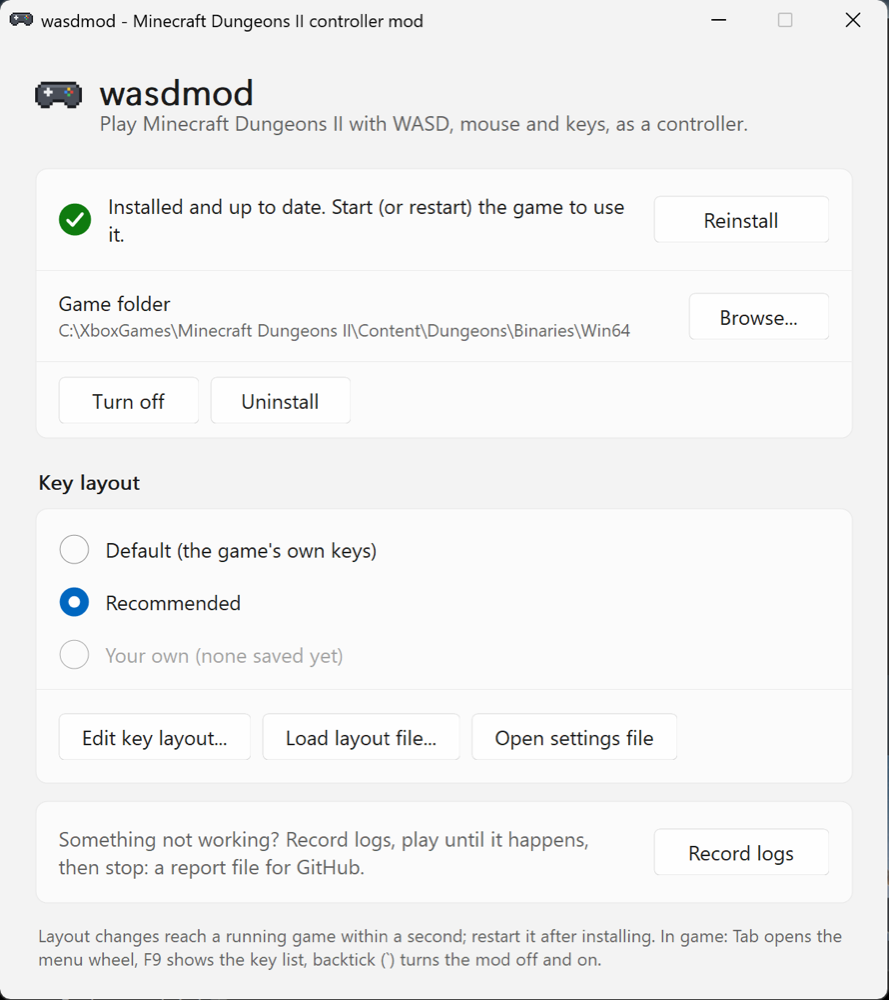
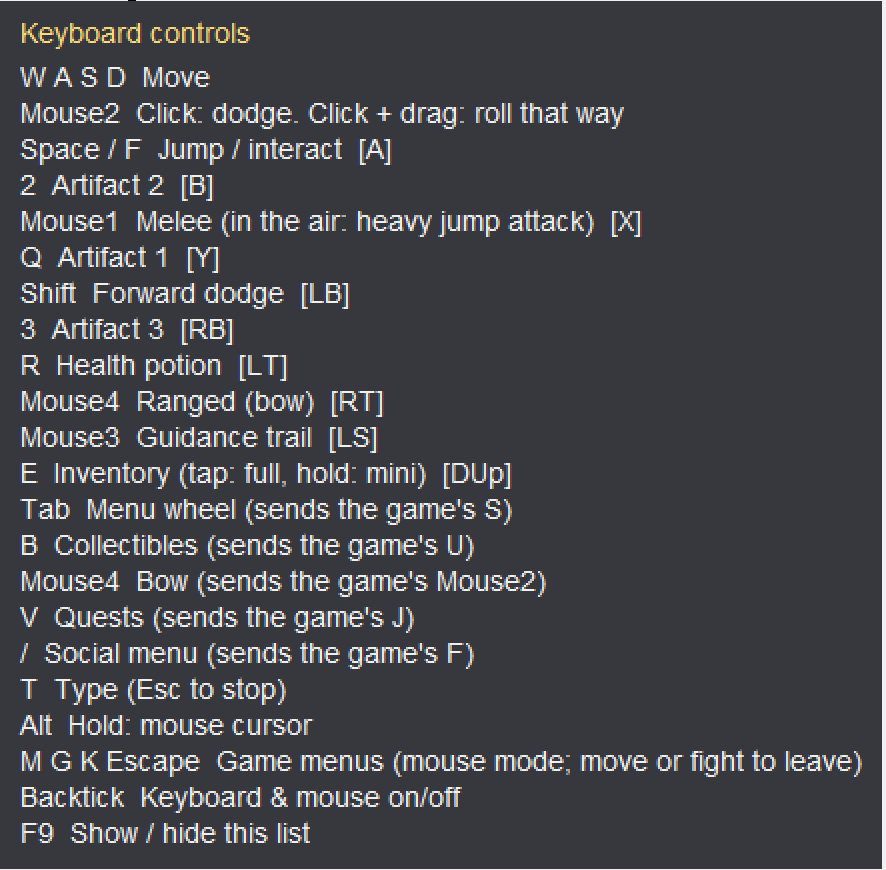

WASD controls for Minecraft Dungeons II
Play Minecraft Dungeons II with WASD, mouse and keyboard instead of click-to-move. wasdmod turns your keys into a virtual controller, so you get the game's full controller moveset: smooth movement, dodges, artifacts and the menu wheel. Menus, the cursor and chat still work with the mouse.
Free and open source (MIT) · Steam, Minecraft Launcher and Xbox app versions · 16 languages · All versions


What you get
Real controller controls
Fights go through a virtual Xbox controller, so movement is smooth in every direction and the game's controller abilities just work.
Dodge with the mouse
Click to dodge the way you're moving. Click and drag to roll the way you drag.
Mouse when you need it
Menus switch to the mouse by themselves. Hold Alt (Option on a Mac) for the cursor, press T to type in chat.
Your own keys
Two built-in layouts or your own. Clashing keys are flagged, and a keyboard map shows what every key does.
Matches the game's settings
The apps read the game's own keyboard settings and can set them to your keys, so menus use the same keys as fights.
Changes apply live
Save a layout and a running game switches to it within a second. F9 shows the key list in game.


Download and install
Windows
- Close the game and run wasdmod-Windows.exe.
- If Windows says "Windows protected your PC", click More info → Run anyway.
- Click Install, pick a key layout and start the game.
Mac (CrossOver)
- The game has to run in CrossOver first: MCD2 Crossover sets that up.
- Open wasdmod-Mac.dmg and drag wasdmod into Applications.
- Open it (if macOS blocks it: System Settings → Privacy & Security → Open Anyway), quit the game, click Install.
Linux / Steam Deck
- Unzip and copy xinput1_4.dll and default.txt into the game's Dungeons/Binaries/Win64 folder.
- Set the launch option WINEDLLOVERRIDES="xinput1_4=n,b" %command%.
Nothing in the game is modified. wasdmod is one file next to the game (xinput1_4.dll), which Windows loads as the controller library. Press ` in game to turn it off and on; Turn Off and Uninstall in the app remove it.
Controls
Default plays the game's own keyboard keys as a controller. Recommended is the author's layout. Change any of them in the editor.
| Action | Default | Recommended |
|---|---|---|
| Move | W A S D | W A S D |
| Jump / interact | Space | Space or F |
| Melee (in the air: heavy jump attack) | Left click | Left click |
| Bow (hold to aim with the mouse) | Right click | Side button 4 |
| Directional dodge (drag to roll that way) | R or side button 4 | Right click |
| Forward dodge | Side button 5 | Shift |
| Artifacts 1 / 2 / 3 | 1 2 3 | Q 2 3 |
| Health potion | E | R |
| Inventory | I | E |
| Menu wheel | Tab | Tab |
| Map · quests · social | M J F | M V / |
| Cursor · typing · key list · on/off | Alt (hold) · T · F9 · ` | |
Full list and every option: README on GitHub.
FAQ
Does it change the game?
No. The game's files stay as they are; wasdmod only adds its own file next to them. It reads your keyboard and mouse and presents them as an Xbox controller. Steam's "Verify integrity of game files" doesn't touch it.
Can I still use a real controller?
Yes. Real controllers keep working alongside it.
Why does Windows or my antivirus warn about it?
The exe isn't code-signed yet, and a program that reads the keyboard and presses controller buttons looks like other input tools. It's open source, so you can read the code or build it yourself.
Which versions of the game work?
Steam, and the Minecraft Launcher and Xbox app versions on Windows. On a Mac and Linux, the Steam version (set up with MCD2 Crossover on a Mac, or Proton on Linux); Linux is untested.
Which languages?
The same 16 as the game: English, Deutsch, Español, Français, Italiano, Nederlands, Polski, Português (Brasil), Svenska, Türkçe, Русский, Українська, 日本語, 한국어, 简体中文 and 繁體中文. The in-game key list follows the game's language.
Something doesn't work. Where do I report it?
Click Record Logs in the app, play until it happens, then Stop & Save Logs and attach the file to an issue on GitHub. Nothing you type is recorded.